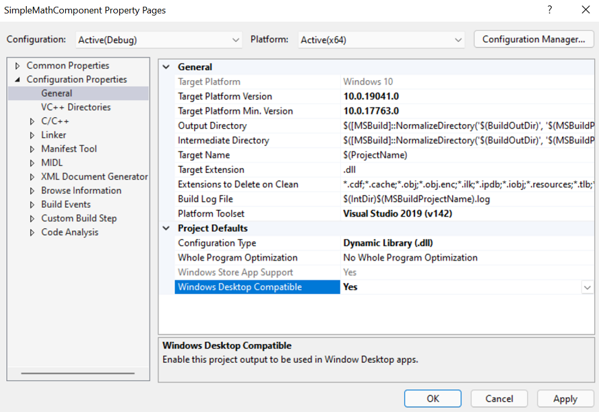
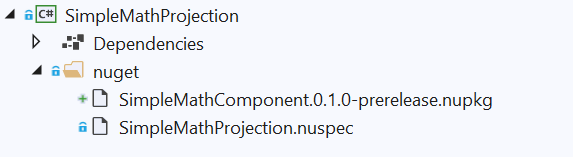

Generate a C# projection from a C++/WinRT component, distribute as a NuGet for .NET apps
In this topic, we walk through using C#/WinRT to generate a C# .NET projection (or interop) assembly from a C++/WinRT Windows Runtime component, and distribute it as a NuGet package for .NET applications.
In .NET 6 and later, consumption of Windows metadata (WinMD) files is no longer supported (see Built-in support for WinRT is removed from .NET). Instead, the C#/WinRT tool can be used to generate a projection assembly for any WinMD file, which then enables consumption of WinRT components from .NET applications. A projection assembly is also known as an interop assembly. This walkthrough shows you how to do the following:
- Use the C#/WinRT package to generate a C# projection from a C++/WinRT component.
- Distribute the component, along with the projection assembly, as a NuGet package.
- Consume the NuGet package from a .NET console application.
Prerequisites
This walkthrough and the corresponding sample require the following tools and components:
- Visual Studio 2022 (or Visual Studio 2019) with the Universal Windows Platform development workload installed. In Installation Details > Universal Windows Platform development, check the C++ (v14x) Universal Windows Platform tools option.
- .NET 6.0 SDK or later.
Visual Studio 2019 only. The C++/WinRT VSIX extension, which gives you C++/WinRT project templates in Visual Studio. The project templates are built in to Visual Studio 2022.
We'll be using Visual Studio 2022 and .NET 6 in this walkthrough.
Important
Also, you'll need to download or clone the sample code for this topic from the C#/WinRT projection sample on GitHub. Visit CsWinRT, and click the green Code button to get the git clone url. Be sure to read the README.md file for the sample.
Create a simple C++/WinRT Windows Runtime component
To follow this walkthrough, you must first have a C++/WinRT Windows Runtime component (WRC) from which to generate the C# projection assembly.
This walkthrough uses the SimpleMathComponent WRC from the C#/WinRT projection sample on GitHub, which you already downloaded or cloned. SimpleMathComponent was created from the Windows Runtime Component (C++/WinRT) Visual Studio project template (which comes with Visual Studio 2022, or with the C++/WinRT VSIX extension).
To open the SimpleMathComponent project in Visual Studio, open the \CsWinRT\src\Samples\NetProjectionSample\CppWinRTComponentProjectionSample.sln file, which you'll find in your download or clone of the repo.
The code in this project provides the functionality for the basic math operations shown in the header file below.
// SimpleMath.h
...
namespace winrt::SimpleMathComponent::implementation
{
struct SimpleMath: SimpleMathT<SimpleMath>
{
SimpleMath() = default;
double add(double firstNumber, double secondNumber);
double subtract(double firstNumber, double secondNumber);
double multiply(double firstNumber, double secondNumber);
double divide(double firstNumber, double secondNumber);
};
}
You can confirm that the Windows Desktop Compatible property is set to Yes for the SimpleMathComponent C++/WinRT Windows Runtime component project. To do that, in the project properties for SimpleMathComponent, under Configuration Properties > General > Project Defaults, set the property Windows Desktop Compatible to Yes. That ensures that the correct runtime binaries are loaded for consuming .NET desktop apps.

For more detailed steps about creating a C++/WinRT component and generating a WinMD file, see Windows Runtime components with C++/WinRT.
Note
If you're implementing IInspectable::GetRuntimeClassName in your component, then it must return a valid WinRT class name. Because C#/WinRT uses the class name string for interop, an incorrect runtime class name will raise an InvalidCastException.
Add a projection project to the component solution
First, with the CppWinRTComponentProjectionSample solution still open in Visual Studio, remove the SimpleMathProjection project from that solution. Then delete from your file system the SimpleMathProjection folder (or rename it if you prefer). Those steps are necessary so that you can follow this walkthrough step by step.
Add a new C# library project to your solution.
- In Solution Explorer, right-click your solution node and click Add > New Project.
- In the Add a new project dialog box, type Class Library in the search box. Choose C# from the language list, and then choose Windows from the platform list. Choose the C# project template that's called simply Class Library (with no prefixes nor suffixes), and click Next.
- Name the new project SimpleMathProjection. The location should already be set to the same
\CsWinRT\src\Samples\NetProjectionSamplefolder that the SimpleMathComponent folder is in; but confirm that. Then click Next. - On the Additional information page, select .NET 6.0 (Long-term support), and then choose Create.
Delete the stub Class1.cs file from the project.
Use the steps below to install the C#/WinRT NuGet package.
- In Solution Explorer, right-click your SimpleMathProjection project and select Manage NuGet Packages.
- In the Browse tab, type or paste Microsoft.Windows.CsWinRT into the search box, in search results select the item with the latest version, and then click Install to install the package into the SimpleMathProjection project.
Add to SimpleMathProjection a project reference to the SimpleMathComponent project. In Solution Explorer, right-click the Dependencies node under the SimpleMathProjection project node, select Add Project Reference, and select the SimpleMathComponent project > OK.
Don't try to build the project yet. We'll be doing that in a later step.
So far, your Solution Explorer should look similar to this (your version numbers will be different).

Build projects out of source
For the CppWinRTComponentProjectionSample solution in the C#/WinRT projection sample (which you downloaded or cloned from GitHub, and now have open), the build output location is configured with the Directory.Build.props file to build out of source. That means that files from the build output are generated outside of the source folder. We recommend that you build out of source when you use the C#/WinRT tool. That prevents the C# compiler from inadvertently picking up all *.cs files under the project root directory, which can cause duplicate type errors (for example when compiling for multiple configurations and/or platforms).
Even though this is already configured for the CppWinRTComponentProjectionSample solution, follow the steps below to get practice in doing the configuration for yourself.
To configure your solution to build out of source:
With the CppWinRTComponentProjectionSample solution still open, right-click on the solution node, and select Add > New Item. Select the XML File item, and name it Directory.Build.props (without a
.xmlextension). Click Yes to overwrite the existing file.Replace the contents of Directory.Build.props with the configuration below.
<Project> <PropertyGroup> <BuildOutDir>$([MSBuild]::NormalizeDirectory('$(SolutionDir)', '_build', '$(Platform)', '$(Configuration)'))</BuildOutDir> <OutDir>$([MSBuild]::NormalizeDirectory('$(BuildOutDir)', '$(MSBuildProjectName)', 'bin'))</OutDir> <IntDir>$([MSBuild]::NormalizeDirectory('$(BuildOutDir)', '$(MSBuildProjectName)', 'obj'))</IntDir> </PropertyGroup> </Project>Save and close the Directory.Build.props file.
Edit the project file to execute C#/WinRT
Before you can invoke the cswinrt.exe tool to generate the projection assembly, you must first edit the project file to specify a few project properties.
In Solution Explorer, double-click the SimpleMathProjection node to open the project file in the editor.
Update the
TargetFrameworkelement to target a specific Windows SDK version. This adds assembly dependencies that are necessary for the interop and projection support. This sample targets the Windows SDK version net6.0-windows10.0.19041.0 (also known as Windows 10, version 2004). Set thePlatformelement to AnyCPU so that the resulting projection assembly can be referenced from any app architecture. To allow referencing applications to support earlier Windows SDK versions, you can also set theTargetPlatformMinimumVersionproperty.<PropertyGroup> <TargetFramework>net8.0-windows10.0.19041.0</TargetFramework> <!-- Set Platform to AnyCPU to allow consumption of the projection assembly from any architecture. --> <Platform>AnyCPU</Platform> </PropertyGroup>Note
For this walkthrough and the related sample code, the solution is built for x64 and Release. Note that the SimpleMathProjection project is configured to build for AnyCPU for all solution architecture configurations.
Add a second
PropertyGroupelement (immediately after the first) that sets several C#/WinRT properties.<PropertyGroup> <CsWinRTIncludes>SimpleMathComponent</CsWinRTIncludes> <CsWinRTGeneratedFilesDir>$(OutDir)</CsWinRTGeneratedFilesDir> </PropertyGroup>Here are some details about the settings in this example:
- The
CsWinRTIncludesproperty specifies which namespaces to project. - The
CsWinRTGeneratedFilesDirproperty sets the output directory in which the projection source files are generated. This property is set toOutDir, defined in Directory.Build.props from the section above.
- The
Save and close the SimpleMathProjection.csproj file, and click to Reload projects if necessary.
Create a NuGet package with the projection
To distribute the projection assembly for .NET application developers, you can automatically create a NuGet package when building the solution by adding some additional project properties. For .NET targets, the NuGet package needs to include the projection assembly and the implementation assembly from the component.
Use the steps below to add a NuGet spec (
.nuspec) file to the SimpleMathProjection project.- In Solution Explorer, right-click the SimpleMathProjection node, choose Add > New Folder, and name the folder nuget.
- Right-click the nuget folder, choose Add > New Item, choose XML file, and name it SimpleMathProjection.nuspec.
In Solution Explorer, double-click the SimpleMathProjection node to open the project file in the editor. Add the following property group to the now-open SimpleMathProjection.csproj (immediately after the two existing
PropertyGroupelements) to automatically generate the package. These properties specify theNuspecFileand the directory to generate the NuGet package.<PropertyGroup> <GeneratedNugetDir>.\nuget\</GeneratedNugetDir> <NuspecFile>$(GeneratedNugetDir)SimpleMathProjection.nuspec</NuspecFile> <OutputPath>$(GeneratedNugetDir)</OutputPath> <GeneratePackageOnBuild>true</GeneratePackageOnBuild> </PropertyGroup>Note
If you prefer generating a package separately, then you can also choose to run the
nuget.exetool from the command line. For more information about creating a NuGet package, see Create a package using the nuget.exe CLI.Open the SimpleMathProjection.nuspec file to edit the package creation properties, and paste the following code. The snippet below is an example NuGet spec for distributing SimpleMathComponent to multiple target frameworks. Note that projection assembly, SimpleMathProjection.dll, is specified instead of SimpleMathComponent.winmd for the target
lib\net6.0-windows10.0.19041.0\SimpleMathProjection.dll. This behavior is new in .NET 6 and later, and is enabled by C#/WinRT. The implementation assembly,SimpleMathComponent.dll, must also be distributed, and will be loaded at runtime.<?xml version="1.0" encoding="utf-8"?> <package xmlns="http://schemas.microsoft.com/packaging/2012/06/nuspec.xsd"> <metadata> <id>SimpleMathComponent</id> <version>0.1.0-prerelease</version> <authors>Contoso Math Inc.</authors> <description>A simple component with basic math operations</description> <dependencies> <group targetFramework="net6.0-windows10.0.19041.0" /> <group targetFramework=".NETCoreApp3.0" /> <group targetFramework="UAP10.0" /> <group targetFramework=".NETFramework4.6" /> </dependencies> </metadata> <files> <!--Support .NET 6, .NET Core 3, UAP, .NET Framework 4.6, C++ --> <!--Architecture-neutral assemblies--> <file src="..\..\_build\AnyCPU\Release\SimpleMathProjection\bin\SimpleMathProjection.dll" target="lib\net6.0-windows10.0.19041.0\SimpleMathProjection.dll" /> <file src="..\..\_build\x64\Release\SimpleMathComponent\bin\SimpleMathComponent\SimpleMathComponent.winmd" target="lib\netcoreapp3.0\SimpleMathComponent.winmd" /> <file src="..\..\_build\x64\Release\SimpleMathComponent\bin\SimpleMathComponent\SimpleMathComponent.winmd" target="lib\uap10.0\SimpleMathComponent.winmd" /> <file src="..\..\_build\x64\Release\SimpleMathComponent\bin\SimpleMathComponent\SimpleMathComponent.winmd" target="lib\net46\SimpleMathComponent.winmd" /> <!--Architecture-specific implementation DLLs should be copied into RID-relative folders--> <file src="..\..\_build\x64\Release\SimpleMathComponent\bin\SimpleMathComponent\SimpleMathComponent.dll" target="runtimes\win10-x64\native\SimpleMathComponent.dll" /> <!--To support x86 and Arm64, build SimpleMathComponent for those other architectures and uncomment the entries below.--> <!--<file src="..\..\_build\Win32\Release\SimpleMathComponent\bin\SimpleMathComponent\SimpleMathComponent.dll" target="runtimes\win10-x86\native\SimpleMathComponent.dll" />--> <!--<file src="..\..\_build\arm64\Release\SimpleMathComponent\bin\SimpleMathComponent\SimpleMathComponent.dll" target="runtimes\win10-arm64\native\SimpleMathComponent.dll" />--> </files> </package>Note
SimpleMathComponent.dll, the implementation assembly for the component, is architecture-specific. If you're supporting other platforms (for example, x86 or Arm64), then you must first build SimpleMathComponent for the desired platforms, and add these assembly files to the appropriate RID-relative folder. The projection assembly SimpleMathProjection.dll and the component SimpleMathComponent.winmd are both architecture-neutral.
Save and close the files you just edited.
Build the solution to generate the projection and NuGet package
Before building the solution, make sure to check the Configuration Manager settings in Visual Studio, under Build > Configuration Manager. For this walkthrough, set the Configuration to Release and Platform to x64 for the solution.
At this point you can now build the solution. Right-click on your solution node and select Build Solution. This will first build the SimpleMathComponent project, and then the SimpleMathProjection project. The component WinMD and implementation assembly (SimpleMathComponent.winmd and SimpleMathComponent.dll), the projection source files, and the projection assembly (SimpleMathProjection.dll), will all be generated under the _build output directory. You'll also be able to see the generated NuGet package, SimpleMathComponent0.1.0-prerelease.nupkg, under the \SimpleMathProjection\nuget folder.
Important
If any of the files mentioned above are not generated, then build the solution a second time. You might also need to close and reopen the solution before rebuilding.
You might need to close and reopen the solution for the .nupkg to appear in Visual Studio as illustrated (or just select and then deselect Show All Files).

Reference the NuGet package in a C# .NET 6 console application
To consume SimpleMathComponent from a .NET project, you can simply add to a new .NET project a reference to the SimpleMathComponent0.1.0-prerelease.nupkg NuGet package that we created in the previous section. The following steps demonstrate how to do that by creating a simple Console app in a separate solution.
Use the steps below to create a new solution containing a C# Console App project (creating this project in a new solution allows you to restore the SimpleMathComponent NuGet package independently).
Important
We'll be creating this new Console App project inside the
\CsWinRT\src\Samples\NetProjectionSamplefolder, which you'll find in your downloaded or clone of the C#/WinRT projection sample.- In a new instance of Visual Studio, select File > New > Project.
- In the Create a new project dialog box, search for the Console App project template. Choose the C# project template that's called simply Console App (with no prefixes nor suffixes), and click Next. If you're using Visual Studio 2019, then the project template is Console Application.
- Name the new project SampleConsoleApp, set its location to the same
\CsWinRT\src\Samples\NetProjectionSamplefolder that the SimpleMathComponent and SimpleMathProjection folders are in, and click Next. - On the Additional information page, select .NET 6.0 (Long-term support), and then choose Create.
In Solution Explorer, double-click the SampleConsoleApp node to open the SampleConsoleApp.csproj project file, and edit the
TargetFrameworkandPlatformproperties so that they look as shown in the following listing. Add thePlatformelement if it's not there.<PropertyGroup> <OutputType>Exe</OutputType> <TargetFramework>net6.0-windows10.0.19041.0</TargetFramework> <Platform>x64</Platform> </PropertyGroup>With the SampleConsoleApp.csproj project file still open, we'll next add to the SampleConsoleApp project a reference to the SimpleMathComponent NuGet package. To restore the SimpleMathComponent NuGet when building the project, you can use the
RestoreSourcesproperty with the path to the nuget folder in your component solution. Copy the following configuration, and paste it into SampleConsoleApp.csproj (inside theProjectelement).<PropertyGroup> <RestoreSources> https://api.nuget.org/v3/index.json; ../SimpleMathProjection/nuget </RestoreSources> </PropertyGroup> <ItemGroup> <PackageReference Include="SimpleMathComponent" Version="0.1.0-prerelease" /> </ItemGroup>Important
The
RestoreSourcespath for the SimpleMathComponent package shown above is set to../SimpleMathProjection/nuget. That path is correct provided that you followed the steps in this walkthrough, so that the SimpleMathComponent and SampleConsoleApp projects are both in the same folder (theNetProjectionSamplefolder, in this case). If you've done something different, then you'll need to adjust that path accordingly. Alternatively, you can add a local NuGet package feed to your solution.Edit the Program.cs file to use the functionality provided by SimpleMathComponent.
var x = new SimpleMathComponent.SimpleMath(); Console.WriteLine("Adding 5.5 + 6.5 ..."); Console.WriteLine(x.add(5.5, 6.5).ToString());Save and close the files you just edited, and build and run the console app. You should see the output below.

Known issues
- When building the projection project, you might see an error like: Error MSB3271 There was a mismatch between the processor architecture of the project being built "MSIL" and the processor architecture, "x86", of the implementation file "..\SimpleMathComponent.dll" for "..\SimpleMathComponent.winmd". This mismatch may cause runtime failures. Please consider changing the targeted processor architecture of your project through the Configuration Manager so as to align the processor architectures between your project and implementation file, or choose a winmd file with an implementation file that has a processor architecture which matches the targeted processor architecture of your project.
To work around this error, add the following property to your C# library project file:
<PropertyGroup> <!-- Workaround for MSB3271 error on processor architecture mismatch --> <ResolveAssemblyWarnOrErrorOnTargetArchitectureMismatch>None</ResolveAssemblyWarnOrErrorOnTargetArchitectureMismatch> </PropertyGroup>
Further considerations
The C# projection (or interop) assembly that we showed how to create in this topic is quite simple—it doesn't have dependencies on other components. But to generate a C# projection for a C++/WinRT component that has references to Windows App SDK types, in the projection project you'd need to add a reference to the Windows App SDK NuGet package. If any such references are missing, then you'll see errors such as "Type <T> could not be found".
Another thing that we do in this topic is to distribute the projection as a NuGet package. That is currently necessary.